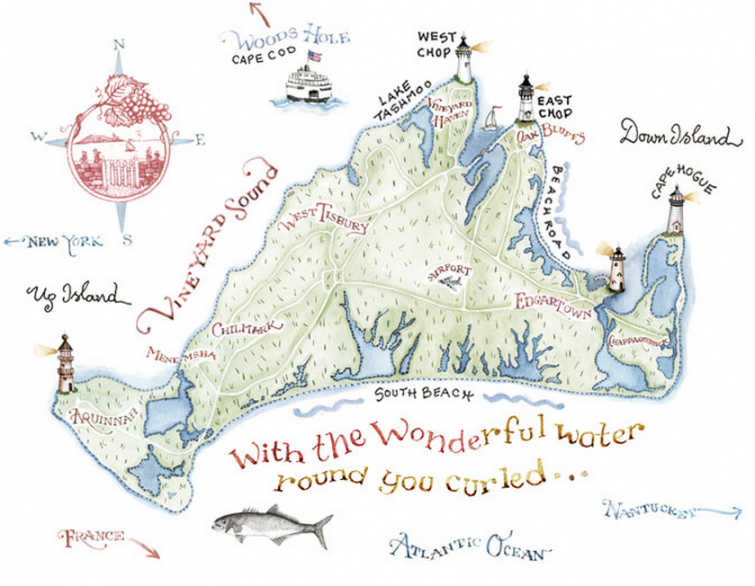
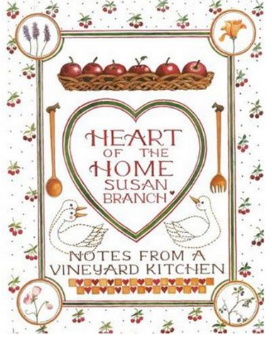

.png)
.PNG)
.PNG)
.PNG)
.PNG)
.PNG)
.JPG)
.JPG)
.PNG)
.PNG)


source
Happy Martha’s Vineyard Week to you! No, I’m afraid we are not actually on the island (sigh…) BUT you and I are going to take a virtual trip there starting today. 🙂 How about that?! Of course I have to give you some background info on why we are going there. I can’t exactly remember when my love for the island started. It was probably in my teens..those summer days in the library. I discovered magazines and books that featured beautiful homes on the Vineyard, and I was totally smitten.
And then later, in 1986 – when I had been married barely a year, my husband and I were traveling in North Carolina. In some little shop in Maggie Valley I discovered a book that deepened that affection for the island…Susan Branch’s Heart of the Home, Notes from a Vineyard Kitchen. I had grown up with Holly Hobbie and Betsey Clark art (even “wallpapering” one wall in my bedroom with Betsey Clark gift wrap!) and I loved hand lettering. It was no wonder I loved the precious watercolors in Heart of the Home.

Heart of the Home: Notes From a Vineyard Kitchen
(All book are linked to my Amazon affliate link.)
If you are familiar with Susan Branch’s books, you know this was the first of many that are filled with handwritten recipes, wonderful illustrations, clever quotes, and other tidbits from her life on Martha’s Vineyard. Her books are truly works of art. Two years later, I was charmed by Vineyard Seasons.

Vineyard Seasons: More from the Heart of the Home
And then two years later came the fabulous holiday book, Christmas from the Heart of the Home.
Christmas from the Heart of the Home
(You know this lover of all-things-Christmas couldn’t resist that book!) With each book, I wanted to be on the island of Martha’s Vineyard more and more.
If you remember my first post on Jan Karon’s Mitford books, then you know I kind of go all out when I love something. One is never enough. (Case in point – all the black and white photography in our house here. 🙂 ) Anyway, I loved loved loved all the pages in Susan Branch’s books, and I sort of….um…went all out with them as well. I want to show you how “all out” I went, but to explain it I am going to have to show you some very old and some very bad photography (when I had a little Kodak instamatic and knew absolutely nothing about taking pictures. 🙁 ) So please forgive the quality here. Okay?
Alright, we were living in this house, our second home – the first one we built. (This floorplan if you are interested.)
I bought a couple of copies of Susan’s books, and then I began to cut out the pages. (Oh yes I did.) I matted them, framed them, and hung them everywhere in our home..and I do mean everywhere. 🙂
Up the staircase…
(of course it would be a Christmas photo.)
Over the desk…
(That’s the desk that is now on the porch. )
Over the old piano in the hallway…
In the kitchen…
(You knew there had to red gingham somewhere, right? 🙂 Oh and that is Mary Engelbreit cherry wallpaper…daughter’s nursery was done in the cherry fabric. )
A set of 6 in the red red dining room…
And 4 in the laundry room.
Oh how I wish I had that room in this house! (Our laundry “room” is a closet – seriously.)
I guess you can tell now I really liked her work. So in 2001, when I spotted this magazine in the bookstore, you better believe I scooped it up!
And I have saved it ever since. (I saved it to show you! I knew we would be talking about houses, and I wanted to show you Susan Branch’s home on Martha’s Vineyard. 🙂 )
You can see here in her dining room, she collects vintage china and glassware…
and old linens.
Several years ago, she designed a line of fabrics. You can see some of it by the chairs in her living room. (There is a gorgeous Martha’s Vineyard red toile available here and a wonderful article in which she talks about quilting here.)
There are several antique pieces in her very comfortable living room.
And that is all from my saved magazine. So now let me share with you a little more about her home from some other sources. Isn’t the exterior just beautiful?! Built in 1849 by a whaling captain, the home is located in Vineyard Haven.
Here is a guestroom decorated for Christmas. It is accessed by a stairway next to her kitchen.
And this is her cozy kitchen. The old stove there is a reconditioned 1958 O’Keefe and Merritt stove. She wanted one identical to the one in the California home she grew up in. So she found a dealer of reconditioned appliances and they shipped it to her on the island.
She also has a kitchen garden where she grows herbs and mostly salad things – with a few occasional watermelons and pumpkins for fun. 🙂
Country Living magazine did a feature on fall entertaining with Susan several years ago. You can read it here.
And here she is working in her studio. She grew up in California, one of 8 children. She was married for 4 years but then suffered a heartbreaking divorce. That heartbreak was what sent Susan to Martha’s Vineyard to start a new life – and what a new life she built there!
She bought a little house, made some new friends, got a job in a gourmet shop, and she practiced painting. At the urging of a dear friend, she began to make a cookbook – a hand lettered recipe collection with her charming watercolors, quotes about home, and writings about her life on Martha’s Vineyard.
Recipes like this…
and this…
And artwork like this…
She fell in love with Joe Hall, then owner of The Black Dog Tavern.
(He has a cookbook too!)
The Black Dog Summer on the Vineyard Cookbook
And Susan has written over 14 books.
(I can’t figure out exactly how many so let’s stick with “over 14.” 🙂 )
Cape Cod Life
She also has a wonderful wonderful blog here (that I don’t want to tell you about because you will love it so much you will never return here! 🙁 ) And a fabulous newsletter called Willard (in honor of her grandfather) with her signature artwork and fun writing. You should sign up for it here!
A couple of years ago, she and Joe traveled to England, and Susan turned her journals and photographs from the trip into a best selling book, A Fine Romance: Falling in Love with the English Countryside.
A Fine Romance: Falling in Love With the English Countryside
And then they traveled all over the U.S. in a decorated van promoting the book in a book tour. Now Susan has a new one coming out in August! (My birthday month! 🙂 ) It is again a compilation of her journals, photographs, and art – but this time from her life when she was in her twenties.
And I am pre-ordering a signed (hopefully!) copy for my giveaway to one of you dear readers! It will arrive in August, but the other parts of the giveaway will arrive before then. And what are those “other parts” you ask? Let’s see..two of my favorite books that Susan Branch has written…Girlfriends Forever and my most favorite, The Summer Book. (I can’t even count how many copies of The Summer Book I have given as end of the year gifts to my children’s teachers!) You will love both books with their gorgeous artwork, recipes, and stories! And I am also throwing in a $25 Amazon gift card so that you can order another book by Susan or perhaps Joe’s cookbook (or whatever you would like. 🙂 )
None of this is sponsored. (Although I do want to thank Susan for allowing me to use some of her images in this post. 🙂 )The giveaway is just because I wanted you to enjoy a little taste of Martha’s Vineyard this summer. 🙂 So how do you enter? Just leave a comment on talkofthehouse.com (not on your email delivered post) on any or all of the posts that publish between 7/13/2015 (today) and midnight on Sunday 7/19/2015…only one comment per post please. That’s all. I’ll do a random drawing from all the names and announce the winner in the next post after Sunday.
I hope you have enjoyed seeing Susan Branch’s home on the island and some of her work today. Be sure you come back for another visit here this week for more places from Martha’s Vineyard (and more chances to enter for the giveaway!)
Until next time…


.PNG)
Thank you for this terrific post! My late Godmother (from Cape Cod) bought me Heart of the Home back when it first came out and she got it autographed by Susan Branch for me. What a beloved keepsake this is for me. Thank you for the beautiful reminder!!! 🙂
——————————————————————–
You lucky girl Jean!! You own a very special book – not only an original, but also an autographed original! We are all jealous. 🙂
Kelly
I am reading the blogs I missed from new to old and I got so excited when I saw pictures of your old house. Thank you for sharing a little more about you. I don’t know how I haven’t heard about Susan Branch before now…but she has nothing on your lettering. Maybe now that you are retired there is a book in you??
Would love to win your giveaway.
Cindy
Thank you for the adorable post on Susan Branch, she is one of my favorite artists & writers! I’m always cheered up and inspired by looking at her books but I don’t have many. Thanks for a fun contest!
Thanks Kelly!! Filling my brain with inspiration!!!(as usual!!)
Another great post that has me dreaming. What a wonderful place. I would love to sit on that porch and sketch that lighthouse and think of all that has passed by. I still have my fingers crossed to win. Love Susan Branch.
Love Susan Branch books!!! Thanks for the summary.
I just finished “A Fine Romance”. Loved it.
I am in love with the Harbor View Hotel. Thanks for all the great pics and details. The cottages are so cozy looking. Martha’s Vineyard just has a dreamy quality to it … someday I will visit there. Thanks Kelly for the peek inside of the hotel and Susan’s home.
Susan Branch books are a work of art. What a great post. Hope you are enjoying your retirement!
I love Susan Branch’s work!
I do recognize her work from magazines, but I’ve never read her books – they sound delightful! What a wonderful generous give-away! I’m going to check out her blog now.
What a lovely posting. Thank you for sharing about Houses and Susan Branch. They seem to go together nicely, no don’t they? How thoughtful of you to have a giveaway; her writings are always so pleasant.
Oh, Kelly! What a wonderful tale about Susan’s life and home on Martha’s Vineyard! Susan has inspired my life and our family traditions for so many years. I’m so excited about her upcoming book. It has been such fun to discover your blog, Kelly! I’ll be a regular visitor now. From one fairy tale girl to another… Happy summer days! ♡
Great post! I love Susan Branch books. They are comforting to the soul. I would love to win this book.
I love your blog. Thank you for giving me so much pleasure.
What a wonderful post of your home decorating and of Susan’s, LOVE her and now will follow your blog!
i love Susan Branch’s artwork!
Thank you for the chance to win. The Susan Branch books sound charming. Just discovered your delightful blog! Really enjoy reading, Talk of The House.
Thanks for sharing so much information about Susan Branch. Love her books!
I love your site and I love that you really really love Susan too. I am so excited to have found you and I AM GOING TO SPEND THE REST OF THE AFTERNOON PERUSING YOUR SITE:)
Have been a fan of Susan’s for MANY years. She NEVER ceases to amaze me! God is SOOO good to us to send her our way:-)))
Toni from Sylvania OH
I love your site! Thank you for introducing me to Susan Branch cookbooks!
Love your blog and would love to win this book. Thank you for the opportunity.
Nancy
I have loved Susan Branch for years and have several of her books, but would love to win this giveaway to have even more of her “over fourteen” books. I am excited to read her new book and find out more about her life. I DO love her blog, but there is plenty of room in my head and heart for her blog and yours !
I have loved Susan Branch for so very long! Your post was a wonderful mini biography; I enjoyed every word and picture! I was lucky enough to go to one of her book signings for A Fine Romance and meet her. Fingers crossed I win this fantastic drawing! ♥
I love, love, love everything Susan Branch and everyone that loves her too. Can’t wait for her new book to add to my collection. Happy summer to all.
Love Susan Branch…..favorite blog. Can’t wait until she starts writing on it again! A new book is worth the wait, though.
I love Susan’s pictures and thought of cutting them out as well!
It’s my first visit to talkofthehouse and I will be back! Very nice!!
What a perfect pairing. Thanks to my love of all things Susan Branch now I have found your blog. How could I have been missing you? I love your blog and all the wonderful things that you tell us about. Such inspiration. Kindred spirits for sure. I would love to be your very lucky winner. Thank you.
How could I have not have heard of her? I would love to win these!! Thank you for the giveaway.
I love the connections I find between people and things I really like. Your blog ,as well as Susan’s , are two must reads. I would love to win your prize and especially Susan’s new book. Thanks for the opportunity.
Such a fan of Susan and you, thanks for sharing.
I love Susan’s work. It was so nice to see all the pictures. I hope to one day have a space larger than a studio apartment, so I can decorate it more like you and Susan. Thank you for the giveaway. Finger’s crossed!
Please enter me in your susan branch giveaway Like her blog
but yours is a favorite of mine Such a fan of both
linda m
What a wonderful and lovely post you did! I’m new to you but will visit daily like I do Susan’s and as we all do I adore Susan! Glad to have another great site to visit and dream daily! How kind of you to do such a nice giveaway!
I loved learning about Susan Branch and seeing her house on Martha’s Vineyard! I can’t wait to introduce my daughter and daughter-in-law to her books. Kelly, I see why you admire her work so much. Thanks so much for sharing. Julia Walker
What a wonderful lovely post! Susan Branch has been inspiring me since around 1980. As her mail carrier when she lived in California, before she moved to Martha’s Vineyard, I got to pick up a lot of beautifully decorated envelopes that she sent out, which inspired me to start doing artwork on my own letters to friends (back when we sent those via ‘snail mail’). Then she moved away. A few years later, I was reading a copy of Country Living and spied a little hand colored & scripted recipe “from the Heart of the Home by Susan Branch”. I gasped aloud, “Is that MY Susan Branch?” And it was. For all the world to see & be inspired by, just like I was. Because she’s not just “MY” Susan Branch; she’s “OUR” Susan Branch! YAY!
Kelly,
Here I am looking like a dunce for the whole world to see….but…of course I love your blog….you know that…and Susan Branch (you might not have known that) BUT….I am confused about the quote (below) on how to enter the giveaway.
(Just leave a comment on talkofthehouse.com (not on your email delivered post) on any or all of the posts that publish between 7/13/2015 (today) and midnight on Sunday 7/19/2015)
Am I the only one who doesn’t know the difference? I thought all your posts arrived via email to my InBox. O, glory day, I need educating, Kelly.
In the meantime, just remember that you introduced me to red buffalo check and we share the same birthday month….and because of you scores of us get to travel all around seeing B E A U T I F U L houses.
Stay cool.
I Love all things Susan Branch! I first discovered her I began scrapbooking and found her stickers and papers in the late ’90s. I would Love to visit Martha’s Vineyard someday. She makes it sound so charming! Thanks for sharing. I will definitely be Back!
I love all of Susan’s work. Thanks for sharing.
Love the Martha’s Vineyard & Susan Branch post!
Kelly,
I love the White House! I also love Susan Branch’s work.
DiAnne
Thanks for introducing me to Susan Branch. I loved going to her website and reading all about her and her paintings and books. This is a fun giveaway!
I hopped on Amazon to take a look at some of her books and they are sooo charming! Would love to try some of the recipes…we have a big family and like the classic comfort foods.
Thank you for brightening my day with this post. Hoping to add some cheery books to my library.
I love Susan Branch’s art. She has a way of capturing child-like simplicy like only a few artist can. Thank you for the inspiration and giveaway!
I love your blog!!! I love your style!!! So excited about the Susan Branch book giveaway!!! I love her books.
Thank you for sharing Susan Branch, Martha’s Vineyard, and more of yourself…with a little ‘Christmas in July’ thrown in! Always look forward to your blog.
I love Susan’s blog and I love yours, too. Both are so full of beautiful inspiration to enjoy every moment of life. Thank you!
The Summer Book has always been my favorite also! Thanks for the lovely tour.
Thank you for your beautiful post featuring Susan Branch . Susan’s delightful artwork has always inspired me . I have enjoyed many of her books and calendars over the years .
Your blog is one of my favorites because it is so well written and so much fun !
I also have been fascinated by Martha’s Vineyard. You have given me more reasons that it is a must to visit.
I love Susan Branch! And I love your blog. I sit on my deck in morning with a cup of coffee and the first thing I check is your blog. Thank you. I love your style!
I have enjoyed Susan Branch’s books for years. I have given several of the Girlfriends Forever books as gifts. Thank you for the opportunity to win.
I loved reading this article and I love Susan Branch.I’ve been a fan of hers for years! Loved growing up with Holly Hobby and Betsy Clark!
I love Susan Branch & have been a fan for over 15 years! Just this past May I had the chance to visit Martha’s Vineyard & really enjoyed it. I hope to return someday in the summer months to experience the Island alive & hopping!
I am a native Santa Cruz, CA girl but the Vineyard has a special charm that draws you, and along with Susans’s help, you easily fall in love with it!
I loved your blog about Susan Branch! I met her in our little village of Arroyo Grande about 10 years ago,and had the joy of working in her store there, Heart of the Home! I had the pleasure of seeing people come into her store, and loving everything there because of her special books, and fabric, and everything wonderful in the Susan Branch world. I later worked in her Studio, and helped ship out the over 15,000 plus copies of ‘A Fine Romance’ books. She is everything you describe,and she is a joy to know and have as a girlfriend!!
What an interesting post! Great pics of your former home…lots of your signature red! I learned a lot more about Susan Branch too…thanks for the opportunity! 😉
Love Susan Branch…love her original artwork, her recipes, her books, her blog!!! She has such a positive outlook on life and always makes sure to appreciate the little things in life. Would love to win her fabulous books!
Oh, I love Sussn Branch and all her works. Thank you for this giveaway! I will be following you in the future!
Blessings,
Gert
LOVE Susan Branch books, her art and sentiments!
I had all that wallpaper!Holly Hobbie! (I named my daughter Holly)
Oh! Susan Branch! Still love all of those books and pictures!
Thank you for the generous giveaway.
I love that you framed Susan’s pages!
Take care, Pam
I’ve loved Susan Branch for a long time. Now my daughter is hooked and loves her books, too.
Delightful post as always Kelly. Very interesting and informative. I will definitely check out her books -Susan W.
Kelly,
Thank you for a wonderful well thought out give away. I too love Susan Branch! What’s not to love? I could move into her house today.
Hope you are enjoying your retirement!
Thanks again,
Dawn R.
Hi Kelly!
Please count me in for a copy of one of Susan Branches’ books! You did a lovely posting for Susan….I read her blog, bought her calendar for my kitchen last two years and have one of create your own cookbooks. I am becoming an excited
new fan – LOL. Thank you. All the best!
I am a Susan Branch fan, but also a fan of your blog! I check to see what is going on in each of your lives. Thank you for all the beautiful and good ideas.
Kelly,
Great post! I too, love Susan Branch. Love her blog, books, artwork etc. Must now check out your blog in more detail. Thanks!
I love your post. I’ve been following Susan for just a few years but I love her site and the postings …. and the CATS! Thank you for the giveaway. I’m crossing my fingers to win!
I so enjoyed this post, thank you for sharing it! I’ve been a Susan Branch fan since 1987 when I picked up her first book in a little shop on Martha’s Vineyard. I’ve bought just about every book since then and have bought them again and again to give as gifts to my dear girlfriends. I even have Joe’s cookbook! Several of Susan’s recipes are ones I make regularly. I adore her artwork and well, just everything Susan Branch! She is an inspiration for sure!
Love this giveaway….and all your posts!! Pick me!
I love the cape which my husband took me for our five year anniversary!! I fell in love with all the islands, which we rode our bike all over. Love Susan Branch and her drawings and cookbooks! Love your blog and will look for it next week!!
Thank you!
I love your blog! Thank you for featuring Susan Branch’s work!
Hello Kelly !
My name is Sylvie and I’m writing to you from France.
I’ve just discovered your blog through Susan Branch Facebook page and I’m already eager to know more about you. You seem to be a lovely person.
I’ve subscribed to your blog at once and I’m sure that I’ll spend happy hours reading your previous posts.
I love Susan Branch books, so thank you for your give away.
Another Susan Branch Fan! Adore your site, love it when I find a kindred soul. Looking forward to sharing new posts !.
Thank you for sharing Susan Branch. I have heard of her but have never seen her artwork – now I am in love!
Isn’t Susan a wonderful author, artist, and friend!!
Thank you for such a lovely post. I’m adding you to my favorites.
Susan Branch is such a delight and I had the pleasure of meeting her at a Gladys Taber event in CT last June. What a treat it was.
A woman after my own heart! I discovered Susan Branch decades ago (you, my dear, appear to be much younger than I, who am 73) and have al her books, have followed her blog since its inception, still have lots of her scrapbook items, which are no longer sold, and use them for special projects and special occasion gifting, and often times have purchased in duplicate books that I want to scan the pages or use in other ways-that way I can have one that is perfectly in tack and one that I can cut, copy and paste as I want. This is a grand recollection of all things wonderful about this dear artist. Thanks for compiling. I too dream of living on Martha’s Viveyard, but for me it is only a dream as my years dwindle. I shall subscribe to your blog as I love your style and have the same heart as you.
Susan Branch called us at the Laura Ashley Home Store in Boston in the early 1990’s and ordered “Seaside Border” for a Martha’s Vineyard bedroom depicting Victorian children in sailor and nautical attire playing at the beach. She was very nice and we (the LA staff) wrote messages on her mailing box (“We LOVE your books, etc!”
I have the same border in my daughter’s nursery – she is now 18 and it is still there – love it!
I enjoy your blog!
I’ve loved Susan Branch for years, and now that I’ve found your blog, have loved visiting you, too! Thanks for sharing and fueling passions! Happy Day —
I love Susan Branch! Thank you so much for sharing your love of her with us.
Susan Branch is one of my favorites! I have most of her books and adore her just as much as you do. Thanks for sharing!
OMG! – I’ve already commented on this post, but thank you so much for putting the link to Susan Branch’s blog! I had no idea she had one — (I must be living under a rock) – anyway, I just spent the last couple of hours going through her entire blog! Thank you again!
Thanks for sharing the virtual tour. It looks like a really special place
Kelly, wonderful to meet you via your website! It’s nice to come across a kindred spirit. I bought my first Susan Bramch cookbook in 1988 and now have all of her books as they are works of art. I pre-ordered ‘A Fine Romance’ but wouldn’t let myself read it until last month after I retired as I wanted to savor it which I did. I raved about it so much that my husband read it and delighted in it, too!
We recently sold our home in Massachusetts and are now full-time RVers for the next 4-5 years. When choosing what cookbooks to bring most of them were Susan’s. I have outfitted our 31ft home with treasures that delight me ‘ala Susan’.
Happy Birthday next month (mine is in August, too)!
Visited Marthas Vineyard for the first time last summer. What a beautiful place !!!
I have loved Susan Branch’s blog for so long and now have found yours! Love her images they are soft comforting words in a hustle bustle world.
I have always enjoyed Susan Branch, but am thrilled to learn so much about her…..and can’t wait to check out her website. I absolutely love the picture of her garden…..I might have to copy it!!
Just love all things Susan Branch! Thanks so much! This is also my first visit to your website. Will definitely return!
I was just reading about her Peter Rabbit room! Love Susan Branch’s work!
Thank you for such a lovely post on Susan Branch. She is truly amazing. Thank you for the opportunity.
A Fine Romance is one of my favorites and I am so looking forward to the prequel! Susan Branch is the ultimate BFF and her blog and website are so dreamy. What a great post and a fun giveaway!
Kelly, I knew we were kindred spirits! I, too, love Susan Branch. I have all her books except for maybe a few. She is so talented and her blog, like yours, brings me happiness when I visit. I was able to meet her a couple years ago when her and Joe were doing a book signing for her book A Fine Romance. She was so sweet and kind. My favorite book is her Autumn book. Her calendars are great too. It was fun seeing pics of your home from years ago. This post was great. Thank you! I guess if I won these books, I could give each of my daughters one.
I so love Susan Branch too! She is incredibly talented! I have several of her cookbooks! Would love to visit Martha’s Vineyard – someday!
I have several Susan Branch books and love them. Read her blog to. she is such a wonderful designer of all things wonderful in life. 🙂 Good, Positive energy there.
God Bless
I have always loved Susan Branch! Years ago I bought a Susan Branch calendar with recipes in it. I still have some of those recipes with her artwork. I hope to one day visit Martha’s Vineyard since it’s always been a dream of mine.
Thank you for the tour and the chance to win. I found you through a link on Susan’s Facebook page. You have a lovely blog that I’ll be reading from now on.
I too had a wall covered with Betsy Clark and Holly Hobbie! I was not that familiar with Susan Branch, but it’s lovely. What a romantic life to start over at Martha’s Vineyard. Thank you Kelly for the post, it was lovely and now I want to make lavender cookies!
Please count me in…I need some beauty in my life while I go to all these pregnancy appointments….which have now increased lately. Thanks so much…..just sharing these images with us made me have a better morning. HAVE A GREAT DAY!
Susan Branch has such a delightful style, as do you! Thanks for entering me in the drawing!
I love Susan Branch’s books, especially all of the great artwork! Thanks for sharing and for the giveaway opportunity!
Blessings,
Lanita
How delightful! Thanks so much for the tour !
Fun to see some of your pictures from “back in the day”. 🙂 Looks like you were very much into red back then as well. I can’t imagine living on Martha’s Vineyard, let alone visiting someday. Lucky Susan. Summer has to be heavenly there. Her books are charming and I appreciate the chance to enter your giveaway. Thanks Kelly..
I would love the chance to win the lovely prize of two Susan Branch books to add to my collection! Thank you!
I have always felt I had a little of the Vineyard in my life because of Susan Branch Thank you
Martha’s Vineyard is on my bucket list. I’ve been a Susan Branch fan for years. Her blog is a lovely read and always makes you feel better. I’ve just discovered your blog and signed up. Kelly — thanks for the chance to win.
i love Susan Branch too & love Loki g at houses! I will be exploring your blog for sure!
I just discovered your wonderful blog today. . . .thank you so much for the exciting, uplifting tour of both yours and Susan Branch’s homes. The joy and happiness I feel to have taken “the tour” uplifts me.
I’ve been a fan of Susan Branch for a number of years and have collected a few of her books ( but I don’t have the two you are giving away)!! This is the first time I’m viewing your website and LOVE, LOVE, LOVE it!!! I will be a frequent visitor from now on 🙂
I must live under a rock but I had never heard of Susan Branch. Probably an East Coast/West Voast thing. She is adorable! Hmmmmmm-lavender cookies and a raised bed guards with a white picket fence. Perfect for my new “cottage
“here in Southern California. (watering only under our strict drought guidelines, of course). Thanks for the introduction to such lovely things.
I always enjoy reading about Susan Branch and she has inspired me to start watercolor lessons this fall at my local senior center.
The Susan Branch books give me a warm and fuzzy feeling. Love all her works and especially love the lettering as I “play” at scripting now & again. Her works make me feel like a true lady …
Hi Kelly,
I just discovered you and absolutely love your blog. I too, am a fan of Susan Branch and cannot wait for her new book! I love your pictures of your home…we have very similar taste in decorating. Look forward to reading all of your posts!
Have a wonderful summer!
Sincerely,
Karen
Hi Kelly! Wonderful blog of yours! I just discovered it and I’m looking forward to many wonderful visits. I’ve pre-ordered Susan’s new book and I’m looking forward to reading it. I have quite a few of her books, including A Fine Romance and I love hearing about Martha’s Vineyard. Thank you for this giveaway! The lucky winner will be just that…..very lucky!
LOVE Susan Branch. . .Have all of her cookbooks and give them as gifts frequently! Live in Edgartown and am always hoping that Susan will make an appearance somewhere. . .
Wow, I enjoyed reading your blog this morning and marveled at the ambitious Susan Branch. Holly Hobbie was a favorite of my daughter. Yes, we had several dolls, framed pictures, and the bedspread. Oh, even a Holly Hobbie light switch cover graced my daughter’s wall. Kelly, I will enjoy adding Susan Branch’s new novel to my reading list. Thank you again for sharing.
Good Day Kelly!
What a lovely Blog you have. I’m also a huge fan of the wonderful Susan Branch. Will be back to enjoy reading more of yours.
Thanks for the giveaway! Whoever wins will be thrilled with the
books I’m sure.
i wanted to do the same thing with a Susan Branch Book but lacked the nerve. You are so awesome. Would love to win the book and love your site!
Thank you so much for this article. I have always loved the idea of a vacation to Martha’s Vineyard. Love the Northeast. I love Susan Branch’s books. Thanks for the tour!
Hi Kelly…I just wanted to say how much I enjoyed your post about Susan. I am the Rachel in the Lavender Cookies recipe, and also in ‘A Fine Romance’…very proud to be a good friend of hers. I know she would appreciate this post as much as I do. She is just as wonderful in person as she is in her books and artwork…inspirational, warm, generous. Her blog is a great way to ‘get to know’ her…and yours is just lovely too! With love and best wishes from rainy (but warm!) England this morning xo
I love all things Susan Branch and would LOVE to win more of her books! Great article, thank you for a sweet giveaway 🙂
I just love Susan Branch and have a couple of her books. I hope to visit Martha’a Vineyard one day. Maybe I’ll try the brownie recipe.
Oh, Hollie Hobbie – that takes me back!! I too want to visit Martha’s Vineyard some day – it seems divine. I’m not familiar with Susan Branch, so I’ll have to do some ‘research’ now… 🙂
More time now than ever to enjoy the heart of the home lifestyle Now that I am retired. Special friends having tea, cheering each other on in creative home settings to enjoy joy the seasons.Reading and exploring
I discovered Susan Branch shortly after her first book came out. I still have most of the Country Living pages she did; I had planned on framing them, but never got to it. Seeing your framed prints, it makes me want to pull them out. Thanks for a wonderful post; I really enjoyed it!
What a joyous post….and I have found a kindred spirit as I read your blog. Now ia am going on to read more and more. Thanks for the chance to win!!!
Would love to win, thank you!
thoroughly enjoyed your blog tonight…just happened upon it!!! Have loved Susan Branch for a long time!!!
I love your blog because you are so informative! You give me so much to love! Would love to win these books!
Love all things Susan Branch – thank you for sharing!
I had the pleasure of meeting Susan at one of her book signings in 2012. Such a thrill! This is a delightful post and I look forward to many more. Thank you for your generous giveaway.
Wonderful post…I love Martha’s Vineyard and Susan Branch’s writings. Thanks for sharing.
What a treat! This was a lovely blog post. Your giveaway is so generous.
I have always wanted to visit the island, especially since discovering Susan and the girlfriends.
I love Martha’s Vineyard. Susan ‘s artwork is beautiful, it is so homey & leaves me with such a good feeling.
What a delightful blog you have written! Thank you for a lovely tour of the island. I agree with you that Susan Branch books are so beautiful.
I love Susan Branch and have been following her since the 90’s! So much inspiration as you have shown here. If I could only bear to take one of her books apart to do what you did…
I too love Susan’s art work and books. So glad to have found your blog;) Thank you for the opportunity to win the books;)
Susan Branch’s ‘The Summer Book’ was my introduction to her also. 🙂 I have loved her work ever since! Thanks for sharing all about her in your blog. I look forward to your next posts. 🙂
What a wonderful giveaway! Thank you for being so generous to your readers.
I love Susan branch books my sister in law got me hooked.
Thanks for the generous giveaway . I love learning about Martha’s Vineyard and I have loved all of Susan Branch’s work. Wish me luck!
Love Susan Branch. Nice to meet you.
Oh, how fun!
I own Susan’s book _Autumn_ and also have one of her recipe binders (filled to capacity!), and her address book. I am a regular visitor to her website where she kindly introduced to me the wonderful author, Gladys Taber. Just today I spent an hour in a doctor’s waiting room reading Still Cove Journal while everyone else sat staring at their smartphones. I’m pretty sure I know who enjoyed the wait more. 🙂
We are all friends and fans of Susan, I think!!! She made me feel so good about cooking and making a home for my family when her first book came out. And I had my dream come true in 1993 when we visited Martha’s Vineyard, she inspired me. We loved it of course and we ate at Joe’s restaurant! Good times!
I often wonder how she went from being a sunny California girl with such a tight knit family—to go clear across the country and out to sea to ‘start over’. Her new book will end that mystery, I guess! I’m excited!
Happy post—you have shared your joy in discovering and loving Susan over the years and I so identify. Thanks for a great giveaway! 🙂
Jane x
Would love to win. I loved a fine romance and have a few of her other books.
Thank you for introduction to Susan, I promise I will be back. I have enjoyed your journey through life also. I am beside you in the empty nest, job change, the next big chapter part. Some days lol….I would definetly enjoy a new book, it seems I have more time to read lately.
Lovely post! Loved Susan Branch for years! I received her first book as a gift and have given so many as gifts. When I taught elementary school, I tried to replicate Susan’s lettering on bulletin boards. Her books always make me smile. Your first home was beautiful too! How did you ever leave it?! Looking forward to your upcoming posts, as I always do!! You inspire me. Have a great week.
Sherry
I have loved all things Susan Branch since purchasing her first book in the 1980’s. Thank you for sharing!
I really enjoyed this behind the scenes look at these charming warm homes.
I enjoyed reading your blog for the first time! I’m a Susan Branch fan,too.I would love to win your drawing!
What a delightful visit all about Martha’s Vineyard and dear, dear Susan Branch. Thank you for sharing so many lovely pictures about Susan and her beautiful life. I’m looking forward to her newest book coming out in August. I love her blog, but I’m adding yours to my own ‘must visit’ places too.
And, yes, please enter my name in your generous giveaway.
Wishing you a beautiful day,
Brenda
Loved this post! Thanks for pulling all of this together and for sharing your love over the years! Perhaps the inpiration for the beautiful lettering that you do!?! I will definitely check out the blog, but will continue to love yours!
I love Susan Branch too, and have so enjoyed your post here. Also I dearly love your home.
Hi Kelly,
What a great post! I’ve been a big Susan Branch fan since Vineyard Seasons was first published. I just love her. I also saved that same magazine that you have. I never thought of framing her book pages, you did a great job using them. Your other home was lovely just like your current house is. I never win anything so I don’t think I will win your generous giveaway but if by chance I do, please give the books to someone else. I have all of them plus Joe’s book. Thanks for everything! Have a nice week!
You are me!!!!! I have every one of Susan’s books! I also have ornaments, have gotten Willards electronically and snail mail. Thank you for the sweet blog.
I have followed both you and Susan Branch, for a while now. Two of my most favorite blogs. Thanks so much for updating us on her work, and i will ALWAYS come back to your amazing blog!
I have almost all her books. Susan’s joy ripples through her work. A respite from our every day.
Love,love,love Susan Branch! Am anxiously awaiting her new book’s release this fall.
As i was reading this post, I thought “i could have written this, too”. I have also been a long time fan of SB, love the Cape and the islands, and have many of her books. I am looking forward to spending a few weeks on the Cape in August, too! great post and wonderful tribute to her!
I love Susan Branch’s artwork! Thanks for featuring her
Really enjoyed your stories and pictures. Have loved Susan Vrqnches book and artwork for many years. Had the privilege to visit Martha’s Vineyard wonderful place!
I was checking my email and found your post on Susan Branch. I am so sorry I have missed this as I am not familiar with any of her books till now. They are wonderful and look forward to finding them. My mom is 86 years old and I can’t wait to show her these books. Thank you so much for showing these to me.
So nice to meet you, Kelly. And I am so glad for the introduction to your blog thanks to Susan Branch. I agree with Maree – I will revisit often.
First time here, but think I’ll come again often. I enjoy your enthusiasm for the things that excite and inspire you. I, too, surround myself with pretty and stimulating words and pictures…..many of them Susan’s.
Thank you so much! Would love to win !!! Love Susan Branch!!
Oh boy … you’re going to be INUNDATED with giveaway hopefuls, such as myself! Susan Branch ‘girlfriends’ number in the thousands, you know; so thank you for this wonderfully generous opportunity to win some of her unique artwork. Your idea to frame pages from her books was clever, and they looked amazing throughout your home.
I’m a New England girl, transplanted to the West. I came upon Susan’s “Summer” book in a little thrift store in Yuma, AZ. The nostalgia and wonderful art work drew me in. I was glad that I had the liberty to enjoy a bologna sandwich on white bread with mustard once again! I love reading Susan’s blog, and peeking into her vintage-inspired kitchen. Jack and Girl Kitty are beautiful pets, and enhance the decor! I liked your blog, too.
Love Susan Branch, and your decorating!!
I’ve followed Susan Branch since my sister gave me a SB calendar in 2010. I greatly enjoy her blog, books, recipes and ideas! In fact it was her Facebook page that lead me here! Glad it did. Looks like a place I’ll revisit often!
I so enjoy your blog and this one especially. Susan Branch is such a joy to read about. Have my fingers crossed. Not to worry I shall always look forward to reading your beautiful blog.
I now know and love Susan Branch ever so much more after reading this. I just slightly knew of her work before, and did so love the little I had seen. This giveaway is amazing… thank you!
Love SB and love the article
As always, I opened your post quickly and thoroughly enjoyed learning about Susan Branch. Over the years, I have collected a few of her books…love them.
As an aside, I did think of you today, as I walked into my local Staples to purchase printer ink and there were the Back to School items that I used to run for, buy and save for my class. However, with retirement comes freedom from those expenses. I wondered if you have felt that tug at your heart as you walk into your local stores and realize that you don’t need to pick up kids scissors, glue sticks, notebooks, markers, pencil boxes, etc…to supplement your school-given budget. That for me defines the reality that I am truly retired!!
Enjoy your summer, thank you for this post, and plan to do something fun on the first day of school…you’ve earned it!!
Glad I found your blog. I found it from Susan Branch’s blog. I also love Martha’s Vineyard. I have relatives on the island but don’t get to visit often. I will be sure to keep reading your blog. I love posts about decorating homes.
This is such a great post about our dear Susan Branch!!
Love Susan, love your blog. Thank you for having this give away.
I was always a Mary Englebrieght fan and know exactly the style you like. I love posts on Martha’s Vineyard and this will probably be the closest I get to it, the mister prefers to head south whenever we vacation.
I also have a birthday in August, the 13th, so this should give me a leg up on winning!
Thanks for the chance to win.
Love Susan Branch….she’s a real artist!
What a wonderful blog, Susan Branch one of my favorite people.
I bought “A Fine Romance” for my 13 year old daughter because she is a budding Anglophile and we were both enchanted with Susan’s whimsical art and charming stories. I’ve been searching for copies of her older books ever since. We have even begun planning a trip to Cape Cod/Martha’s Vineyard after being inspired by her beautiful descriptions of the area. Thank you for sharing this wonderful post!
Good job! I love everything Susan as well as Mary E. And Holly H. Etc, etc, . Wasn’t A Fine Romance great? I have made three trips to England, and she nailed it in so many ways!
Wonderful post–I love Susan Branch too!
I have always loved Susan Branch, but now I know Talk of the House!
Thank you
I have always loved Susan Branch and her beautiful artwork. I have a few of her books and have used some of her recipes. I remember the spread about her in Country Living, I believe I still have it. Thank you for sharing the information about her, I am going to check out her blog but would never not come to yours, so enjoy your escapades, recipes and decorating tips!!!Happy Summer, Mickey
Love Susan Branch. Have for years!
A new blog to follow of things I love to read about. Can’t wait to get through all the archives. A big fan of Mary Engelbreight and Susan Branch. I hope I am picked 🙂
I love everything Susan Branch! Really wish I had more of her books! ❤️
I, too have been a fan of Susan Branch for many years. I have to have her calendar in my kitchen each year, or things just ain’t right! HAHA!!
Love Susan Branch! I would especially like to be able to do calligraphy like hers.
I have practiced copying her style, but it’s not to be for this left-handed person.
Sigh…..
I am so thrilled to have found Talk of the House! You are just my cup of tea! I look forward to visiting your page often. I also love everything Susan Branch! She was the inspiration for my wonderful trip to England last year! Your give-away is so exciting…hoping I am the lucky winner!
I love Susan Branch and her work – have been following her for years. Now I am happy to have found your blog through her. Great post.
Love your blog and of course Susan Branch and her books!!! I have the Christmas book; would love to add these to my collection! You are so generous to off such a nice giveaway!!!
I began to follow Susan when I was teaching Home Economics, always looking for any ideas related to my teaching. After releasing ” Fine Romance,” I met her and had my copy signed at a local bookstore. She is as warm as her smile and gives you the feeling she has known you forever. I will treasure our meeting forever.
how nice to meet you-all because I’m a huge fan of Susan and found a link to you thru her Facebook page. Thanks for an opportunity to win!
Wow!!! Holly Hobbie and Susan Branch, Martha’s Vineyard, Retirement, Really bad, bad, pheumonia. I have not talked with you in a long while girl. I have been so busy. I had surgery while you were sick. SONshine (my son) that is what I call him got married this past April in Florida. And finally my life has settled down so I can write. I haven’t stopped reading your blog and I love to keep up with you. I loved Holly Hobbie growing up. Susan Branch has been a fav forever. I have that magazine. I won’t throw it away. I thought I was the only person ever to hang onto a good magazine. I have gotten to where I will tear an article out an save in a sleeve of a binder holding lots of other special articles. This helps me not keep all the magazines. LOL. Hope that you have gotten your internet up and running. If not hang in there I know it is a frustrating process. We love your articles and will stick with you. Your the greatest!!! Keep us enlighten with your wonderful work. Love ya girl!!!
Thank you for painting such a lovely picture of Martha’s Vineyard and Susan Branch…a great inspiration to all of us! Love your blog!
Very happy to meet you and loved reading your
Website; I love Susan Branch and have many of
her books!
Love Susan’s work. Glad to read your post about her. Looking forward to reading her new book!
Loved checking out your floor plan, and loved the idea of framing pages from the books! The artwork is so beautiful–doesn’t make sense to close the book and put it away–good thinking, for sure!
Love Susan Branch
I LOVE Susan Branch. Such a gifted writer and artist. Just a lovely person!!!
Please enter me in your lovely Susan Branch giveaway. I’m a big fan of Susan as well!!
Love Susan Branch’es books and art work. I love all of her pictures of Martha’s Vineyard. Being a family genealogist and studying my family’s early history in America, I have found ancestors who lived in the 1600’s on Martha’s Vineyard. I have not quite forgiven them for moving on.
Hi Kelly! For over a year I have followed your blog and have left comments – lots of which I have remarked how similar you and I are. From sharing a teaching profession to our similar styles, I have loved reading your posts. And today you posted on Martha’s Vineyard and Susan Branch. I have to tell you that I have been a Susan Branch fan since I discovered her first cookbook. I have collected all of her books – both of my children’s baby books are Baby Love. Coincidentally, Martha’s Vineyard was my husband and my honeymoon destination. We then returned for our ten year anniversary and one of my secret wishes was to bump into Susan Branch, although that didn’t happen. 🙂 So when I saw your post today with your framed prints of her artwork and your comments about her many books, I had to chuckle. You and I would be great friends – that I know. But I will settle to read your blog and enjoy all your postings! Thanks for such a wonderful blog!
Susan’s books are beautiful as well as good reading 🙂
What a wonderful post! I have loved Susan’s artwork, then books, then blog, then everything! since the beginning. I lived in the Boston area for years and feel very blessed to have discovered her. Tweeting with her was always a treasure! Thank you for this wonderful giveaway!!!
p.s. I have so many pages from her books (kept the first editions and cut from duplicates lol) and various magazines that I have always wanted to frame and display. So happy to see that you actually did that – they look great!!!
I also am a fan of Susan Branch! I also love, love, love your blog!
Thank you for sharing. I would be thrilled to win!
Kelly,
I too love Susan Branch. I’ve been following her blog for about a year now. I only learned of it last summer. She always tells the best stories of life on Martha’s Vineyard and her and Joe’s adventures. I love her art and can totally see framing your favorite pages from any of her books. I’m eager to read her story of romance this August.
What a fun post, I hadn’t seen many of the things you’ve shared and will go back and follow the links to see what else you’ve brought us.
xo,
Karen
Great article! I love everything Susan Branch.
Oh how fun! I did a post about Susan Branch a couple of years ago. The best part was chatting back and forth with her to make sure it was ok to borrow her pictures. I have always bought her calendars but don’t actually own any of her books. I’d love to win! 🙂
Nice to meet you Kelly! I am a Susan Branch girlfriend and I adore her and her work. You have a very nice blog. I will visit yours too! Thanks for offering Susans books as a prize…wonderful.
What a lovely post! I adore Susan and everything she is about. And your bit about liking Holly Hobbie put a smile on my face, such memories. I love finding those dolls in vintage shops, always so tempted to buy one!
Wonderful blog. I still have Susan’s recipe pages cut out of County Living many years ago. Please enter me in the drawing.
Hi there! Wayyyy back when I wrote to Susan after seeing her first book Love from Heart of the Home, I never expected to get an answer but I just HAD to write to tell her how beautiful and amazing it was. WELL, I got an answer (which I still have) and I was so excited about it.
When I wrote to her on Twitter when it first started she said she remembered me as being one of the first people to write to her.
She is a gem and whenever she has had a book signing in California I’m there. So fun.
We both love the train and when I have written to get with questions about stuff to bring on the trip she always had answered me. She is really special.
I am happy to have found your blog Kelly!! I too love. Susan Branch and her Books… Would love to have a few more!!! Please pick me so I can dream about the Vineyard!!!
Oh my goodness! What a sweet giveaway! I have always admired Susan Branch. I have the Christmas Memories book at the bottom of the stack in that photo! I would be absolutely thrilled to win. Thank you so much for your kindness and generosity. Have a lovely, blessed evening & week!
Vicky
I don’t know how I found you, but I am so excited I did! Kindred spirits – Susan Branch, ME, Jan Karon – all things lovely that bring a smile! I, too, dream of Martha’s Vineyard! Off to explore your website…
i discovered Susan Branch in Dec of 1993′ I was off work with a serious illness. I saw an advertisement for her Christmas book and I was hooked. I searched for her cards and stickers then her stationery and all of her books. Her items are hard to find, but when I do, I have such joy in my heart. The bestthing about her is that she is not phony. I grew up in RI and lived on Spring St. I moved to Calif when I was 12. She grew up in Calif and moved to Mass and lives on Spring St! She is inspiring and so sharing of her life and ideas.
I enjoyed your post about Susan Branch and Martha’s Vineyard! So lovely!
I love love love Susan’s work! I wanted to start buying them for my niece but they’re hard to find! I’d love to win these! Thank you!
I love Susan Branch’s stuff, too! It’s all so charming!!!
Hi Kelly,
This is the first time I have seen your site and I love it. Susan Branch is one of my very favorites and your post about her is great. Thanks for doing the giveaways of her books. Your house is full of some of my favorite things, too. I’ll be back for sure to see what’s new.
Wow–great to find another wonderful website that features many things, including our favorite Susan Branch! Thanks for sharing. I’m anxious to read more of your website after commenting here.
I love Susan Branch and got to see her on her last book tour. What a thrill…she’s just like I imagined. Certainly not abandoning you …you are ‘bookmarked’…lol
i love Susans blog and her website.
her drawings I love too
First time I have visited your post…what a wonderful home you have! I, too, love all things Susan Branch! Someday I will get the opportunity to visit Martha’s Vineyard!
I have loved Susan Branch for many years and it had led me to you! I love all things New England, houses and Susan Branch’s art, recipes and fabrics. I cannot wait to delve into you posts! Happy Summer!
Oh my–I love Susan Branch and all of her amazing books. She has bought so much joy to me and all the girlfriends that follow her. Thank you for the chance at the give away! ♥
First of all, I LOVE your blog! When I saw this one dedicated to Susan Branch, it was too good to be true. My husband and I went to Martha’s Vineyard on a quick vacation before we had our children. That’s where I discovered Susan Branch…her cookbook “Heart of the Home” was in a bookstore. Of course, I bought it and fell in love with her illustrations, as much as her recipes. Through the years, I’ve purchased others. Why didn’t I think of framing some of my favorite recipes? Such a great idea! Although we’ve been married many years and have traveled all over, Martha’s Vineyard remains a very special place. Hopefully, we’ll return soon!
Thank you for sharing! I love Susan Branch and you now have a new fan – thank you again! Happy Summer!
Love your books especially the artwork.
I love this site! Haven’t known about it for too long but it makes me smile! Thanks for sharing with us my friend! <3
Kelly,
I have been a fan of Susan Branch’s artwork, books, and calendars for many years and was lucky enough to meet her two years ago when she came through our city on her tour promoting her then new book, A Fine Romance. She is as lovely in person as I knew she’d be and when she asked me if we had met before I only wish I could have said yes. Can’t wait for her new book to come out next month. Thanks for the giveaway. Take care, Lindy
P.S. We were able to spend another three nights earlier this month in those sweet cottages you blogged about in 2013 in Carpinteria, Ca. Absolutely love them!
Love your pretty White House and its front porch, Susan Branch, and Martha’s Vineyard. I have had a few Susan Branch calendars and at one point had a cookbook. What cute, nostalgic and homey pictures she paints. I hope this post means you are planning a trip to Martha’s Vineyard! Edgartown with all its gray shingled houses and overflowing flowerboxes is my favorite.
What a delightful post, as all yours are!! Surely you have gone to Martha’s Vineyard, as much as you like it. I only have one Susan Branch book, the Christmas one, and it was a gift from a treasured friend. I think I might like that Summer Book! When are you going to do your book? Your calligraphy and charming home would provide much content for a very special one. Thanks for sharing your special loves and talent with us, your readers.
Kelly, This was such a fun post. All the happy colors and beautiful photos of Susan Branch and her life. It is sweet to know that your love of red and white, Susan B, Jan Karon, and a slew of other things….and now to learn we share an August Birthday. Not a chance that your blog would be abandoned! 🙂
Kelly,
I love Susan Branch’s work. I have used tons of her stickers and paper in my daughters scrapbooks and I have her Sweets to the Sweet book. Thanks for sharing her photos and art work with us today. It all really does make me want to visit Martha’s Vineyard!
Love Susan Branch! She reminds me so much of Mary Engelbreight-they both have such adorable art work. I loved this post! I will now be headed to Amazon.com to look for some of those books.
I do love Susan Branch. I have a few of her books (my son’s baby book is “Baby Love”), and I always get her calendar. So fun to get a house tour! Thanks!
Kelly – The only thing you should have changed in your blog post was to type it in
ALL CAPS!! That’s how much I love this post and Susan Branch.
And if I could, I would include a picture of my cookie jar right this minute filled with “Elaine’s Famous Sugar Cookies” from her Vineyard Seasons cookbook (p.144). Seriously the best sugar cookies EVER!
Thanks for a wonderful column today ~
What a talented lady!
I have loved Susan Branch for years and years. What a wonderful post! I love your blog and look forward to your posts and pictures, it makes my day.
Susan Branch is amazing along with Mary Engelbreight~such fun artwork! I found them through a cute website Gooseberry patch, check it out they have so many fun things like this you can purchase too. Thanks for reminding me of the fun things~ I still have a magnet on my fridge that says “Life is like a chair of bowlies” 🙂 Jill
I love everything Susan Branch has ever done and I love this look at her home. What a welcome treat this afternoon! Thank you for your always-interesting posts! And none of us would ever leave your blog!!
I have always loved Susan Branch and all of her ideas. I shall follow her blog but never fear I will never stop enjoying yours. You both are favorites of mine.
Oh I love her! I framed her prints too. Heading over to check our her blog…but I’ll be back.
It just makes my day when I see an email that there was a new post. I admit that I drop everything to look at it.
Hi Kelly! Loved this post on Susan Branch. I’ll check out her blog but I would never want to miss any of your posts! Thanks for all the effort you put into Talk of the House. Anne
What a Sweet Treat on a wonderful summer day! There is so much to look at, think about and try in this post!! I just read through it once and will go back and do an in depth study after I return from supper at Cracker Barrel this evening. Loved seeing your former home! I have several of Susan’s books and dearly love them. I collect cookbooks and read them like some read novels. I especially like the ones that have a bit of history or stories that go with the recipes. And I have a deep desire to visit any place in New England. This may be one of my most “loved” posts of yours! But I say that each time you have one!:)
Again I comment that I need you to be the sister I never had. When I saw that issue of Romantic Homes, I shed a few tears…my mother was a lover of that magazine along with Victorian Homes, Southern lady, etc.. She died 3 years ago – leaving a vast collection of flowered dishes, crystal and antique linens – now all gone in an estate sale (except for the ones my sis in law kept). And then you mentioned Holly Hobbie.. my husband and I just downsized to a new house, and I had to give away my Holly Hobbie collection, though I did save a few pieces (don’t tell him). Yes, these Susan Branch items are such a dear reminder of my late mother and all that she loved. Thanks for the memories.
I love Susan Branch lettering too! So glad to see your stack of cookbooks- would love to win! Thank you for your inspiring posts.
I’m so delighted that a friend recommended your blog to me earlier this summer!!! I have thoroughly enjoyed reading all the past posts. You seem to love so many of the same things I do and then today when I popped over here there was Susan Branch!!! I have been a Susan Branch follower for years, I believe even back to the 80s when she did recipe pages for Country Living. Thanks for the post and I would love to be the winner, the Summer book is one I don’thave.
Love her recipe for lemon noodles! So glad to read more about her. Thanks.
I love Susan Branch, hand lettering, and Martha’s Vineyard, but I gotta tell you…I adore your kitchen from that house. It so reminds me of our previous home. I still love looking back at those 80’s and 90’s photos. Mine was a country version with navy print wallpaper that had a house on the border. I so loved it. Yes, it is all out of style now, but I remember it fondly. Your red gingham curtains and island are adorable.
I LOVE Susan Branch! I fell in love with her after reading “A Fine Romance” and have been following her ever since. She’s amazing…thank you so much for sharing!
Thank you so much for showcasing all of Susan Branch’s work! I have loved her for almost as long as you (thanks to my wonderful mother). Her books and artwork inspire me despite the fact that I live on the opposite coast!
Thanks again for your inspiration!!
Oh, I so enjoyed this post! I have two of Susan’s books, but not the ones you are giving away. The Summer Book looks great, and what a thoughtful gift for a teacher! (I am a teacher) I didn’t know she had a blog, so I will check that out. Thanks for all the info and inspiration.
I am a big Susan Branch and Mary Engelbreit fan as well. I loved this post. Please omit me from the give away Kelly as I have pre ordered Susan’s newest book. I have several of her books and I am always on the look out for more at yard sales etc. Good Luck to all those entering the give away…what a treat for them. I am going to do a give away next week on my blog to thank the ladies that visit me each day.
Thank you for the great post. I am a HUGE fan of Susan a Branch, her art and her books. I’m really excited to read her new book…..would love to win a copy.
Holly Hobbie, Mary Engelbreight,Susan Branch…all favorites of mine now and from long ago. I would love to win. I do follow Susan’s blog but also love yours!!
This is amazing because I’ve been to Martha’s Vineyard twice – loved it, and we consider Fairhope to be a Southern version of that beautiful island. Susan’s work looked familiar, then I realized it’s because I have several of her books! Charming, charming, charming! I never knew her connection with the Vineyard or the Black Dog Tavern. So interesting and fun!
Thank you for the “trip” to Martha’s Vineyard. I was able to visit in June 2001. My husband and I and our 3 boys. Would love to go back and actually stay overnight. It’s beautiful there.
I love Susan Branch artwork. For many years I would buy her greeting cards in bulk. I would buy three or four each of several different designs; birthday cards, miss you cards, get well cards, etc. That way I’d always have a greeting card on hand when I needed one. Even the envelopes on her cards are decorative!
I have recently “discovered” Susan Branch. Although I have seen her books around for a long time, I have just recently (very recently) really come to appreciate her work. This summer, I have begun reading The Cottage Tales of Beatrix Potter series, renewing and increasing my interest in Miss Potter, and discovered that Susan Branch is a big fan as well, and has wonderful Beatrix related things on her website, which led me to discover many other wonderful things on her website, which I have subscribed to just in the past week. So please do enter me in the give away and thank you very much. By the way, I really like the kitchen in your former house. It reminds me of the kitchen in a house that we rented at one time. I like Susan’s simple and cozy kitchen as well. I had not seen that on her web site. Thanks for all of the inspiration!
Serendipity. I was just reading my book on Martha’s Vineyard before I started reading your blog. Love Susan Branch and love your blog, so interesting and fun. Enjoy your day.
I’m so excited to join you for Martha’s Vineyard Week! I would love to visit the island one day… Hope I win the giveaway for these lovely books!
Oooh, love Susan Branch.Love Martha’s Vineyard. Always enjoy Traditional Home’s summer issues because there’s usually a gorgeous house from the vineyard or Cape Cod.
Can’t you just imagine pedaling a vintage bike along the streets there?
Thanks for helping us “explore” such great places!
Can see why you love Susan Branch. Her Lettering is delightful, and so is yours!
Well this post is very fitting as we are going to Martha’s Vineyard on Saturday for a weeks stay. I have never been and am so excited to experience the island….I will have to try and find her lovey home while we’re there.
Thanks 🙂
Oh, joy! One more thing I share with you! Love of Susan Branch.
Along with the love of red, Jan Karon, The Piano Guys, etc.
I cheer your fan club!
DO not enter me in the contest. I have the books, share the pleasure of reading Susan Branch!
Continue doing what you do soooooooooooooo well.
PS Now I just have to read that you have begin quilting.
I have loved Susan Branch for years! Her artwork and positive approach to life is contagious! Thank you for such a lovely post on such an inspirational woman!
I don’t know “why” but her recipe books make me think of the Gooseberry books that I have, have you seen them? Anyhow…I’m just say’n…I want to win (badly) these look like wonderful books to add to my collection.
I have had a busy summer filled with wonderful grandchildren and visiting family and have not commented on any of your posts (I always read them). When I read this I knew I had to take the time to comment. I love Susan Branch and I also framed pages from her books. I also have had a fascination for Martha’s Vineyard all my life and this southern girl must have a bit of Yankee in my DNA.I have never been to the island, but my son has been there many times in connection with his job. Almost 11 years ago his wife accompanied him and they spent a fun week exploring everything. The best thing about the trip was that 9 months later they had my first grandchild!!So now it holds a very special place in my heart. This was a wonderful post and I LOVED everything about it. Thanks!!!
I love Susan Branch and her books. Hope someday to make it to Martha’s Vineyard.
I love Susan Branch’s books. Thanks so much for sharing 🙂